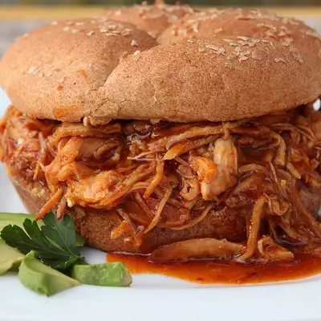

BBQ Chicken

Description
A lovely slow cooked chicken dish with a barbecue sauce to complement it
Ingredients
- 6 frozen skinless, boneless chicken breast halves
- 1 (12 ounce) bottle barbeque sauce
- ½ cup Italian salad dressing
- ¼ cup brown sugar
- 2 tablespoons Worcestershire sauce
Instructions
- Place chicken in a slow cooker. In a bowl, mix the barbecue sauce, Italian salad dressing, brown sugar, and Worcestershire sauce. Pour over the chicken.
- Cover, and cook 3 to 4 hours on High or 6 to 8 hours on Low.